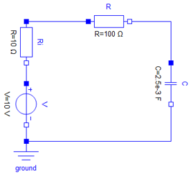
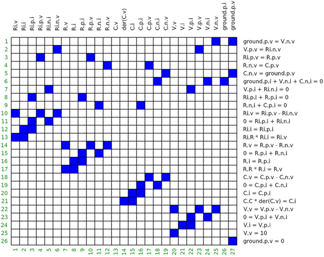
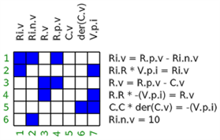

Tutorial
This chapter contains a short tutorial about the data structures and functions provided by package ModiaBase.
1. Regular DAEs (Index Zero DAEs)
In this subsection functions are demonstrated that can be used to transform regular DAEs to ODEs.
The transformations are explained with the following simple electrical circuit (a low pass filter where the voltage source is modelled with an inner resistor):

1.1 Bi-Partite Graph
In a first step, the structural information of the low pass filter model is provided as incidence matrix

- Every column corresponds to one time-varying variable. Parameters, so variables with constant values, are not shown.
- Every row corresponds to one equation.
- A cell is marked (here in blue), if a time-varying variable is present in one equation. Variables that are appearing differentiated, such as
C.v, are not marked because in a first analysis phase, these potential state variables are treated as known.
The matrix above is called the incidence matrix or the bi-partite graph of the circuit. In ModiaBase, this matrix is represented as vector G of Integer vectors:
# Bi-partite graph of low pass filter
G = [ [25,27], # equation 1 depends on variables 25,27
[6,23],
[4,10],
...,
[27] ]This can be also made more explicit (and a bit more efficient storage) by defining the incidence matrix as:
# Bi-partite graph of low pass filter
G = Vector{Int}[ [25,27], # equation 1 depends on variables 25,27
[6,23],
[4,10],
...,
[27] ]1.2 Linear Integer Equations
Object-oriented models consist of a lot of linear Integer equations, especially due to the connect-statements. The linear integer equations of G are identified and the corresponding linear factors are determined. With function simplifyLinearIntegerEquations! this information is used to simplify the equations by transforming the linear Integer equations with a fraction-free (exact) Gaussian elimination to a special normalized form and then perform the following simplifications:
- Equations of the form
v = 0are removed andvis replaced by „0“ at all places wherevoccurs, and these equations are simplified.
- Equations of the form
v1 = v2andv1 = -v2are removed,v1is replaced byv2(or-v2) at all places wherev1occurs (so called alias-variables), and these equations are simplified.
- Redundant equations are removed.
- Variables that appear only in the linear Integer equations (and in no other equations) are set to zero, if they can be arbitrarily selected. For example, if an electrical circuit is not grounded, then one of the electrical potentials is arbitrarily set to zero.
- State constraints are made structurally visible.
After applying simplifyLinearIntegerEquations! to the low pass filter circuit, the incidence matrix is simplified to

# Bi-partite graph of simplified low pass filter
G = Vector{Int}[ [1,2,4],
[1,7],
[3,4],
[3,7],
[6,7],
[2] ]
# Eliminated variables
R.i = -(V.p.i)
ground.p.v = 0
R.p.i = -(V.p.i)
R.n.v = C.v
V.n.i = -(V.p.i)
V.n.v = 0
V.p.v = Ri.n.v
Ri.p.i = V.p.i
C.n.v = 0
C.p.v = C.v
Ri.p.v = R.p.v
C.n.i = V.p.i
V.i = V.p.i
R.n.i = V.p.i
C.p.i = -(V.p.i)
ground.p.i = 0
C.i = -(V.p.i)
Ri.i = V.p.i
V.v = Ri.n.v
Ri.n.i = -(V.p.i)1.3 Assignment
In a follow-up step, an assignment is made (also called matching), to associate one variable uniquely with one equation:

- Red marks show the assigned variables.
- Blue marks show if a variable is part of the respective equation
The assignment is computed with function ModiaBase.matching returning a vector assign:
using ModiaBase
vActive = fill(true,7)
vActive[5] = false # state C.v is known
assign = matching(G, 7, vActive)
# assign = [2,6,3,1,0,5,4]The meaning of vector assign is that
- Variable 1 is solved from equation 2,
- Variable 2 is solved from equation 6,
- etc.
1.4 Sorting
In a follow-up step, equations are sorted and algebraic loops determined (= Block Lower Triangular transformation):

- Red marks show the assigned variables.
- Blue marks show if a variable is part of the respective equation
- A grey area marks an algebraic loop.
The sorting is computed with function ModiaBase.BLT:
using ModiaBase
blt = BLT(G, assign)
#=
blt = [ [6],
[3,4,2,1],
[5] ]
=#The meaning is for example that the second BLT block consists of equations 3,4,2,1 and these equations form an algebraic loop.
1.5 Reducing sizes of equation systems
In a follow-up step, the sizes of equation systems are reduced by variable substitution (= tearing). Applying ModiaBase.tearEquations! to the low pass filter circuit, reduces the dimension of BLT block 2 from size 4 to size 1 resulting in the following equation system:
# iteration variables (inputs): C.i
# residual variables (outputs): residual
R.v := R.R*C.i
R.i.v := -Ri.R*C.i
R.p.v := Ri.v + V.v
residual := R.v - R.p.v + C.v1.6 Generation of AST
In a final step, the AST (Abstract Syntax Tree) of the model is generated. Hereby, it is determined that the equation system of section 1.4 and 1.5 is linear in the iteration variable (C.i) and an AST is generated to build-up a linear equation system A*C.i = b and solve this system numerically with an LU decomposition whenever the AST is called (if the equation system has size 1, a simple division is used instead of calling a linear equation solver). Applying Modia.getSortedAndSolvedAST results basically in a function getDerivatives that can be solved with the many ODE integrators of DifferentialEquations.jl:
function getDerivatives(_der_x, _x, _m, _time)::Nothing
_m.time = ModiaLang.getValue(_time)
_m.nGetDerivatives += 1
instantiatedModel = _m
_p = _m.evaluatedParameters
_leq_mode = nothing
time = _time
var"C.v" = _x[1]
var"V.v" = (_p[:V])[:V]
begin
local var"C.i", var"R.v", var"Ri.v", var"R.p.v"
_leq_mode = _m.linearEquations[1]
_leq_mode.mode = -2
while ModiaBase.LinearEquationsIteration!(_leq_mode, _m.isInitial, _m.time, _m.timer)
var"C.i" = _leq_mode.vTear_value[1]
var"R.v" = (_p[:R])[:R] * var"C.i"
var"Ri.v" = (_p[:Ri])[:R] * -var"C.i"
var"R.p.v" = var"Ri.v" + var"V.v"
_leq_mode.residual_value[1] = (var"R.v" + -1var"R.p.v") + var"C.v"
end
_leq_mode = nothing
end
var"der(C.v)" = var"C.i" / (_p[:C])[:C]
_der_x[1] = var"der(C.v)"
if _m.storeResult
ModiaLang.addToResult!(_m, _der_x, time, var"R.v", var"R.p.v", var"Ri.v", var"C.i", var"V.v")
end
return nothing
end2. Singular DAEs (Higher Index DAEs)
xxx